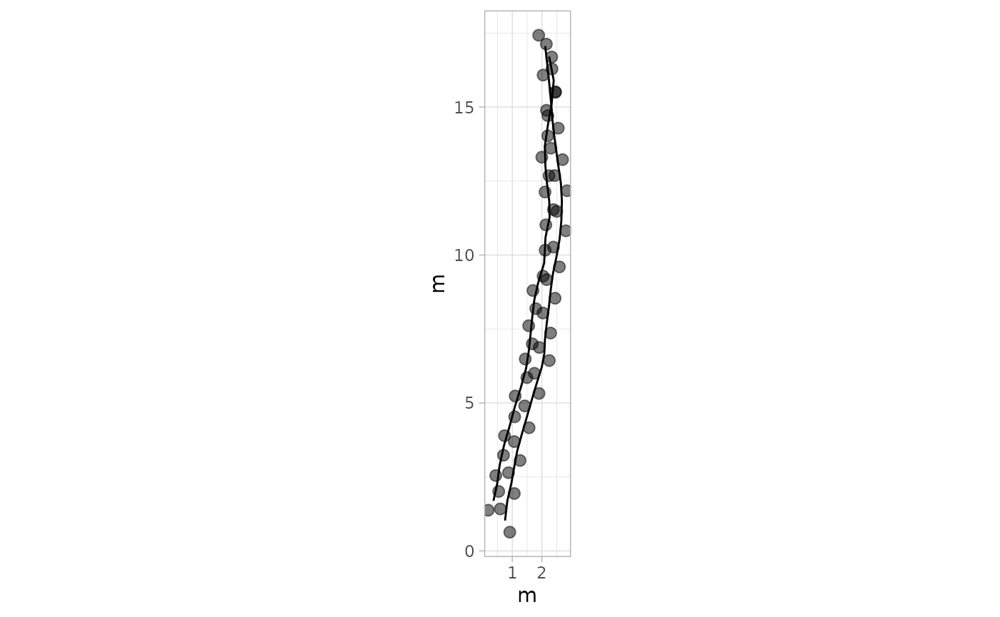

library(QuAnTeTrack)
#> Warning in rgl.init(initValue, onlyNULL): RGL: unable to open X11 display
#> Warning: 'rgl.init' failed, will use the null device.
#> See '?rgl.useNULL' for ways to avoid this warning.This vignette demonstrates how to load, process, and analyze trackway data using the QuAnTeTrack package. We will walk through two datasets:
Paluxy River Dataset: Tracks without missing footprints. This dataset represents dinosaur tracks from the Paluxy River site, described by Farlow et al. (2012). The dataset includes interpolated trajectories and footprint coordinates with metadata indicating whether each footprint is actual or inferred.
Source: Farlow, J. O., O’Brien, M., Kuban, G. J., Dattilo, B. F., Bates, K. T., Falkingham, P. L., & Piñuela, L. (2012). Dinosaur Tracksites of the Paluxy River Valley (Glen Rose Formation, Lower Cretaceous), Dinosaur Valley State Park, Somervell County, Texas. In Proceedings of the V International Symposium about Dinosaur Palaeontology and their Environment (pp. 41-69). Burgos: Salas de los Infantes.Mount Tom Dataset: Tracks with missing footprints. This dataset is based on dinosaur tracks from the Mount Tom site, originally described by Ostrom (1972). It includes interpolated trajectories and footprint coordinates, with markers indicating actual and inferred footprints.
Source: Ostrom, J. H. (1972). Were some dinosaurs gregarious? Palaeogeography, Palaeoclimatology, Palaeoecology, 11(4), 287-301.
We will use the QuAnTeTrack functions to load the data, process the track objects, visualize the tracks, and analyze movement parameters such as velocities and step directions.
Example 1: Paluxy River Dataset
Step 1: Loading and Converting Data
This example demonstrates how to load, process, and analyze trackway data from the Paluxy River Dataset, which includes tracks without missing footprints.
Step 1: Loading and Converting Data The TPS file (PaluxyRiver.tps) is
loaded using the system.file() function to ensure
compatibility across systems. It is then converted to a track object
using the tps_to_track() function. The scale argument is
used to set the coordinate scaling factor. Since no footprints are
missing, the missing argument is set to FALSE and
NAs = NULL.
tpsPaluxyRiver <- system.file("extdata", "PaluxyRiver.tps", package = "QuAnTeTrack")
PaluxyRiver <- tps_to_track(tpsPaluxyRiver, scale = 0.004341493, missing = FALSE, NAs = NULL)Plot with defauts
plot_track(PaluxyRiver)
Plot Footprints Only
plot_track(PaluxyRiver, plot = "Footprints")
Extract extract parameters
params_paluxy <- track_param(PaluxyRiver)
#> $Track_1
#> $Track_1$Turning_angles
#> [1] 83.36749 77.21330 80.06835 79.46614 74.64986 73.75563 73.91299 73.54942
#> [9] 72.64598 79.29432 87.32457 83.82411 82.64091 83.85337 82.06724 78.16842
#> [17] 79.91062 84.65694 88.34770 93.28218 98.22952 98.01709 97.67122 96.57457
#> [25] 94.50862 95.42060 96.01985 96.25904
#>
#> $Track_1$Mean_turning_angle
#> [1] 85.16786
#>
#> $Track_1$Standard_deviation_turning_angle
#> [1] 8.716076
#>
#> $Track_1$Distance
#> [1] 16.09043
#>
#> $Track_1$Length
#> [1] 16.2711
#>
#> $Track_1$Step_lengths
#> [1] 0.6577971 0.6277174 0.5663694 0.5343256 0.5740178 0.6285614 0.6032098
#> [8] 0.5749037 0.5822135 0.4440490 0.4650467 0.5851561 0.5931582 0.5676575
#> [15] 0.5347796 0.5611201 0.6195609 0.6061010 0.6775546 0.6066334 0.5307864
#> [22] 0.4669326 0.5366356 0.6446094 0.6075182 0.5974563 0.6002654 0.6769667
#>
#> $Track_1$Mean_step_length
#> [1] 0.5811108
#>
#> $Track_1$Standard_deviation_step_length
#> [1] 0.05855971
#>
#> $Track_1$Sinuosity
#> [1] 0.07738533
#>
#> $Track_1$Straightness
#> [1] 0.9888963
#>
#>
#> $Track_2
#> $Track_2$Turning_angles
#> [1] 77.67357 82.52517 77.62784 73.77659 74.96477 72.69947 74.84593
#> [8] 80.92672 84.04858 84.37223 83.13249 77.30345 73.16693 86.98721
#> [15] 78.55066 91.34262 97.33861 95.27067 91.84761 81.72095 80.07781
#> [22] 84.97592 100.83397
#>
#> $Track_2$Mean_turning_angle
#> [1] 82.86999
#>
#> $Track_2$Standard_deviation_turning_angle
#> [1] 7.941837
#>
#> $Track_2$Distance
#> [1] 15.13227
#>
#> $Track_2$Length
#> [1] 15.27567
#>
#> $Track_2$Step_lengths
#> [1] 0.5999317 0.6173971 0.6889308 0.6759706 0.6945371 0.6934507 0.6476978
#> [8] 0.5781403 0.5652701 0.5976653 0.5990828 0.5629646 0.7121273 0.8673266
#> [15] 0.6998831 0.5558637 0.5778101 0.5907702 0.6732814 0.7085351 0.7558719
#> [22] 0.7931992 0.8199620
#>
#> $Track_2$Mean_step_length
#> [1] 0.6641595
#>
#> $Track_2$Standard_deviation_step_length
#> [1] 0.08686601
#>
#> $Track_2$Sinuosity
#> [1] 0.1466281
#>
#> $Track_2$Straightness
#> [1] 0.9906128Boxplot of Direction Data
plot_direction(PaluxyRiver, plot_type = "boxplot")
Polar Plot of Step Directions
plot_direction(PaluxyRiver, plot_type = "polar_steps")
Polar Plot of Average Directions Per Track with Custom Breaks
plot_direction(PaluxyRiver,
plot_type = "polar_average",
y_breaks_manual = c(1, 2)
)
Faceted Polar Plot of Step Directions
plot_direction(PaluxyRiver, plot_type = "faceted")
Polar Plot of Average Directions Per Track with Custom Breaks
plot_direction(PaluxyRiver,
plot_type = "polar_average",
y_breaks_manual = c(1, 2)
)Polar Plot with Custom Y-Axis Labels
plot_direction(PaluxyRiver,
plot_type = "polar_steps",
y_labels_position = -90
)
H_paluxyriver <- c(3.472, 2.200)
Method_paluxyriver <- c("A", "B")
velocity_paluxyriver <- velocity_track(PaluxyRiver, H = H_paluxyriver, method = Method_paluxyriver)
#> $Track_1
#> $Track_1$Step_velocities
#> [1] 0.2884087 0.2667234 0.2246319 0.2038125 0.2297207 0.2673225 0.2495612
#> [8] 0.2303131 0.2352243 0.1496251 0.1616271 0.2372131 0.2426553 0.2254857
#> [15] 0.2041018 0.2211659 0.2609607 0.2515620 0.3030204 0.2519311 0.2015630
#> [22] 0.1627231 0.2052861 0.2788176 0.2525451 0.2455988 0.2475302 0.3025814
#>
#> $Track_1$Mean_velocity
#> [1] 0.2357754
#>
#> $Track_1$Standard_deviation_velocity
#> [1] 0.03865919
#>
#> $Track_1$Maximum_velocity
#> [1] 0.3030204
#>
#> $Track_1$Minimum_velocity
#> [1] 0.1496251
#>
#> $Track_1$Step_relative_stride
#> [1] 0.3789154 0.3615884 0.3262496 0.3077913 0.3306554 0.3620745 0.3474711
#> [8] 0.3311657 0.3353764 0.2557886 0.2678840 0.3370715 0.3416810 0.3269916
#> [15] 0.3080528 0.3232259 0.3568899 0.3491365 0.3902964 0.3494432 0.3057525
#> [22] 0.2689704 0.3091219 0.3713188 0.3499529 0.3441569 0.3457750 0.3899578
#>
#> $Track_1$Mean_relative_stride
#> [1] 0.3347413
#>
#> $Track_1$Standard_deviation_relative_stride
#> [1] 0.03373255
#>
#> $Track_1$Maximum_relative_stride
#> [1] 0.3902964
#>
#> $Track_1$Minimum_relative_stride
#> [1] 0.2557886
#>
#>
#> $Track_2
#> $Track_2$Step_velocities
#> [1] 0.3812738 0.3999907 0.4803527 0.4653572 0.4868985 0.4856273 0.4333103
#> [8] 0.3584286 0.3452030 0.3788715 0.3803733 0.3428550 0.5076662 0.7056220
#> [15] 0.4931734 0.3356635 0.3580868 0.3716003 0.4622697 0.5033969 0.5608097
#> [22] 0.6078206 0.6424547
#>
#> $Track_2$Mean_velocity
#> [1] 0.4559611
#>
#> $Track_2$Standard_deviation_velocity
#> [1] 0.1015011
#>
#> $Track_2$Maximum_velocity
#> [1] 0.705622
#>
#> $Track_2$Minimum_velocity
#> [1] 0.3356635
#>
#> $Track_2$Step_relative_stride
#> [1] 0.5453924 0.5612701 0.6263007 0.6145187 0.6313974 0.6304098 0.5888162
#> [8] 0.5255821 0.5138819 0.5433321 0.5446207 0.5117860 0.6473884 0.7884788
#> [15] 0.6362574 0.5053306 0.5252820 0.5370638 0.6120740 0.6441228 0.6871563
#> [22] 0.7210902 0.7454200
#>
#> $Track_2$Mean_relative_stride
#> [1] 0.6037814
#>
#> $Track_2$Standard_deviation_relative_stride
#> [1] 0.0789691
#>
#> $Track_2$Maximum_relative_stride
#> [1] 0.7884788
#>
#> $Track_2$Minimum_relative_stride
#> [1] 0.5053306Example 2: Mount Tom Dataset
tpsMountTom <- system.file(“extdata”, “MountTom.tps”, package = “QuAnTeTrack”) NAs <- matrix(c(7, 3), nrow = 1, ncol = 2) MountTom <- tps_to_track(tpsMountTom, scale = 0.004411765, missing = TRUE, NAs = NAs, R.L.side = c(“R”, “L”, “L”, “L”, “R”, “L”, “R”, “R”, “L”, “L”, “L”, “L”, “L”, “R”, “R”, “L”, “R”, “R”, “L”, “R”, “R”, “R”, “R”)) plot_track(MountTom)
Display track parameters within a scrollable box params_mounttom <- track_param(MountTom) print(params_mounttom)
plot_direction(MountTom, plot_type = “polar_steps”)
H_mounttom <- c(1.380, 1.404, 1.320, 1.736, 1.364, 1.432, 1.508, 1.768, 1.600, 1.848, 1.532, 1.532, 0.760, 1.532, 1.688, 1.620, 0.636, 1.784, 1.676, 1.872, 1.648, 1.760, 1.612) velocity_mounttom <- velocity_track(MountTom, H = H_mounttom) print(velocity_mounttom)